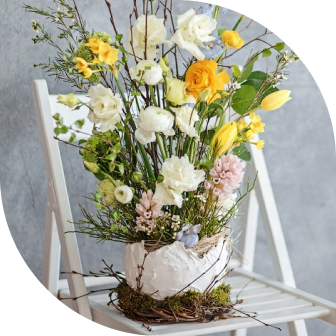
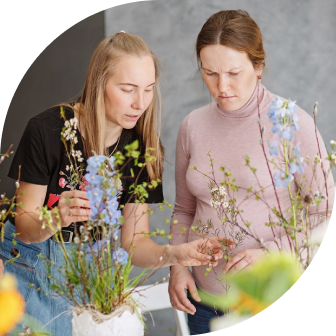
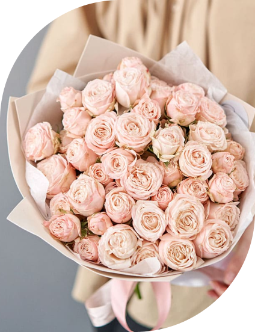

Флористика (от лат. flora), или Флористический дизайн (англ. Floral design) — разновидность декоративно-прикладного искусства и дизайна; создание флористических работ (букетов, композиций, панно, коллажей) из разнообразных природных материалов (цветков, листьев, трав, плодов и т. д.), которые могут быть живыми, сухими или консервированными.
СЛЮБОВЬЮ
К ЦВЕТАМ И К ЛЮДЯМ
Мои сильные стороны
Оформление мероприятий живыми цветами
Оформление свадеб
Оформление камерных свадеб (до 25 человек)
Флористика (от лат. flora), или Флористический дизайн (англ. Floral design) — разновидность декоративно-прикладного искусства и дизайна; создание флористических работ (букетов, композиций, панно, коллажей) из разнообразных природных материалов (цветков, листьев, трав, плодов и т. д.), которые могут быть живыми, сухими или консервированными.
Свадебная флористика (для сотрудничества
со студиями декора)
со студиями декора)
Флористика (от лат. flora), или Флористический дизайн (англ. Floral design) — разновидность декоративно-прикладного искусства и дизайна; создание флористических работ (букетов, композиций, панно, коллажей) из разнообразных природных материалов (цветков, листьев, трав, плодов и т. д.), которые могут быть живыми, сухими или консервированными.
Букет невесты
Флористика (от лат. flora), или Флористический дизайн (англ. Floral design) — разновидность декоративно-прикладного искусства и дизайна; создание флористических работ (букетов, композиций, панно, коллажей) из разнообразных природных материалов (цветков, листьев, трав, плодов и т. д.), которые могут быть живыми, сухими или консервированными.
ЗИМА – ЭТО ОЧЕНЬ любимое МНОЙ
время года, ВЕДЬ ЭТО ПОРА СОЗДАНИЯ
ВОЛШЕБНОЙ НОВОГОДНЕЙ СКАЗКИ
Новогоднее оформление пространств
Оформление входных групп и витрин
Флористика (от лат. flora), или Флористический дизайн (англ. Floral design) — разновидность декоративно-прикладного искусства и дизайна; создание флористических работ (букетов, композиций, панно, коллажей) из разнообразных природных материалов (цветков, листьев, трав, плодов и т. д.), которые могут быть живыми, сухими или консервированными.
Оформление офисов, магазинов и домов
Флористика (от лат. flora), или Флористический дизайн (англ. Floral design) — разновидность декоративно-прикладного искусства и дизайна; создание флористических работ (букетов, композиций, панно, коллажей) из разнообразных природных материалов (цветков, листьев, трав, плодов и т. д.), которые могут быть живыми, сухими или консервированными.
Корпоративные подарки
Флористика (от лат. flora), или Флористический дизайн (англ. Floral design) — разновидность декоративно-прикладного искусства и дизайна; создание флористических работ (букетов, композиций, панно, коллажей) из разнообразных природных материалов (цветков, листьев, трав, плодов и т. д.), которые могут быть живыми, сухими или консервированными.
Композиции для украшения дома
Флористика (от лат. flora), или Флористический дизайн (англ. Floral design) — разновидность декоративно-прикладного искусства и дизайна; создание флористических работ (букетов, композиций, панно, коллажей) из разнообразных природных материалов (цветков, листьев, трав, плодов и т. д.), которые могут быть живыми, сухими или консервированными.
Особенная атмосфера царит на творческих мастер-классах.
Люди приходят узнать что-то новое,
заглянуть за кулисы цветочного Мира,
просто получить удовольствие
от процесса создания своими руками.
И всегда уходят счастливые,
улыбаясь и радуясь результату.
Тематические флористические мастер-классы
Мастер-класс «Осенняя композиция»
Флористика (от лат. flora), или Флористический дизайн (англ. Floral design) — разновидность декоративно-прикладного искусства и дизайна; создание флористических работ (букетов, композиций, панно, коллажей) из разнообразных природных материалов (цветков, листьев, трав, плодов и т. д.), которые могут быть живыми, сухими или консервированными.
Мастер-класс «Интерьерная композиция из сухоцветов»
Флористика (от лат. flora), или Флористический дизайн (англ. Floral design) — разновидность декоративно-прикладного искусства и дизайна; создание флористических работ (букетов, композиций, панно, коллажей) из разнообразных природных материалов (цветков, листьев, трав, плодов и т. д.), которые могут быть живыми, сухими или консервированными.
Мастер-класс «Новогодний венок»
Флористика (от лат. flora), или Флористический дизайн (англ. Floral design) — разновидность декоративно-прикладного искусства и дизайна; создание флористических работ (букетов, композиций, панно, коллажей) из разнообразных природных материалов (цветков, листьев, трав, плодов и т. д.), которые могут быть живыми, сухими или консервированными.
Мастер-класс «Декоративная Ёлка»
Флористика (от лат. flora), или Флористический дизайн (англ. Floral design) — разновидность декоративно-прикладного искусства и дизайна; создание флористических работ (букетов, композиций, панно, коллажей) из разнообразных природных материалов (цветков, листьев, трав, плодов и т. д.), которые могут быть живыми, сухими или консервированными.
Мастер-класс
Флористика (от лат. flora), или Флористический дизайн (англ. Floral design) — разновидность декоративно-прикладного искусства и дизайна; создание флористических работ (букетов, композиций, панно, коллажей) из разнообразных природных материалов (цветков, листьев, трав, плодов и т. д.), которые могут быть живыми, сухими или консервированными.
Мастер-класс «Композиция для Пасхального обеда»
Флористика (от лат. flora), или Флористический дизайн (англ. Floral design) — разновидность декоративно-прикладного искусства и дизайна; создание флористических работ (букетов, композиций, панно, коллажей) из разнообразных природных материалов (цветков, листьев, трав, плодов и т. д.), которые могут быть живыми, сухими или консервированными.
Мастер-класс «Композиция с пионами»
Флористика (от лат. flora), или Флористический дизайн (англ. Floral design) — разновидность декоративно-прикладного искусства и дизайна; создание флористических работ (букетов, композиций, панно, коллажей) из разнообразных природных материалов (цветков, листьев, трав, плодов и т. д.), которые могут быть живыми, сухими или консервированными.
Цветочный пикник на природе - мастер-класс
по плетению венка + фотосессия
по плетению венка + фотосессия
Флористика (от лат. flora), или Флористический дизайн (англ. Floral design) — разновидность декоративно-прикладного искусства и дизайна; создание флористических работ (букетов, композиций, панно, коллажей) из разнообразных природных материалов (цветков, листьев, трав, плодов и т. д.), которые могут быть живыми, сухими или консервированными.


за 8 лет работы и обучения В СФЕРЕ
флористики и декора я наработала
огромный опыт, которым щедро делюсь
Обучение флористов
Основы современной
флористики Offline
ХХ.ХХ.ХХХХ — ХХ.ХХ.ХХХХ
Программа курса:
День 1:
Флористика (от лат. flora), или Флористический дизайн (англ. Floral design) — разновидность декоративно-прикладного искусства и дизайна; создание флористических работ (букетов, композиций, панно, коллажей)
День 2:
Флористика (от лат. flora), или Флористический дизайн (англ. Floral design) — разновидность декоративно-прикладного искусства и дизайна; создание флористических работ (букетов, композиций, панно, коллажей)
День 3:
Флористика (от лат. flora), или Флористический дизайн (англ. Floral design) — разновидность декоративно-прикладного искусства и дизайна; создание флористических работ (букетов, композиций, панно, коллажей)
День 4:
Флористика (от лат. flora), или Флористический дизайн (англ. Floral design) — разновидность декоративно-прикладного искусства и дизайна; создание флористических работ (букетов, композиций, панно, коллажей)
Мой самый большой проект, длиной уже почти в 8 лет, теперь он живет,как и я,в воронеже
Студия атмосферных букетов Процветай
Процветай – это не просто магазин цветов, в нем
я воплощаю свои главные ценности:
только красивые авторские
букеты из свежих цветовтолько качественный сервис с
заботой о клиенте
